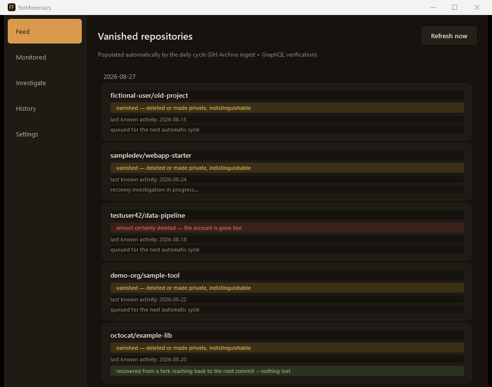

A deleted repo and one made private return exactly the same 404. ForkForensics watches active ones every day, notices when one stops responding, and immediately tries to recover its history from forks still alive and orphan commits.
To notice that a public repository has vanished, you have to have seen it alive and rechecked it later — there's no "repository deleted" event in GitHub's API. This tool automates exactly that check, at scale: every night it downloads the previous day's public events from GH Archive, extracts every repository seen in any event, and bulk-rechecks (GraphQL, 100 at a time) the ones due for verification.

When a repository stops responding, ForkForensics doesn't stop there: it tries to reconstruct what's still reachable, on the same infrastructure GitHub uses for forks.
The fork network preserves a frozen history even after the original vanishes. Every known fork is recursively rechecked (fork-of-forks included) and ranked by how far back in time its oldest commit reaches.
GitHub keeps serving, for an undocumented period,
commits no longer reachable from any branch, if you
know their exact SHA. They're verified with three
independent signals — REST metadata, a raw file
fetch, and a real git fetch — before
being called recoverable.
A public repository this project depended on was re-initialized, apparently losing years of history. Recovering it by hand took hours of manual work — hence the idea of automating the entire process.
The same ranking found by hand months earlier, reproduced automatically by the verification cycle, deepest fork first:
In the process, a real bug surfaced in the fork-of-fork
recursion: the initial heuristic (pushed_at >
created_at) turned out to be wrong — a fork's
pushed_at inherits the timestamp of the
source's last commit, and can precede created_at
for a fork never touched again. Fixed using
forks_count, the right signal already present in
the API response. Thanks to the fix, even the rescue fork
used for the original manual recovery reappeared in the
ranking, along with two other previously invisible
fork-of-forks.
There's no public instance investigating repositories on behalf of strangers with a shared token — that would be a security risk and a quick way to exhaust API rate limits. This page is just a showcase: the real tool runs on your computer.
A real desktop window (PySide6/Qt) — no browser, no web server involved.
The GitHub token you configure stays in a local file on your computer, sent only to GitHub itself (api.github.com and raw.githubusercontent.com). Stored unencrypted — see SECURITY.md.
The database of monitored repositories and recovery outcomes is a local SQLite file, yours.
Clone this repository, then install the dependencies and run the desktop app. On first launch, paste a GitHub token into the Settings page — needed for the daily cycle and for higher rate limits.
git clone https://github.com/siris9476/forkforensics.git
cd forkforensics
python -m venv .venv
# Windows
.venv\Scripts\pip install -r requirements.txt -r requirements-desktop.txt
.venv\Scripts\pythonw -m desktop.main
# macOS / Linux
.venv/bin/pip install -r requirements.txt -r requirements-desktop.txt
.venv/bin/python -m desktop.main